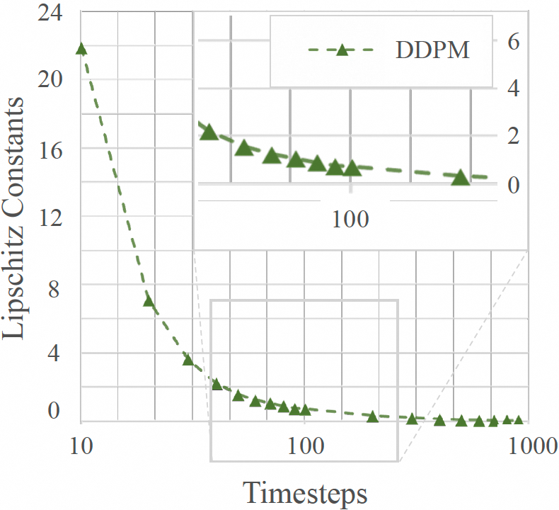
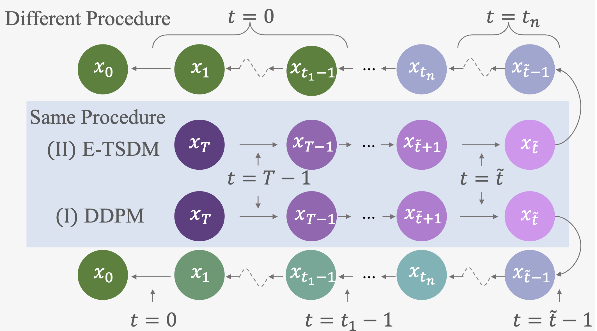
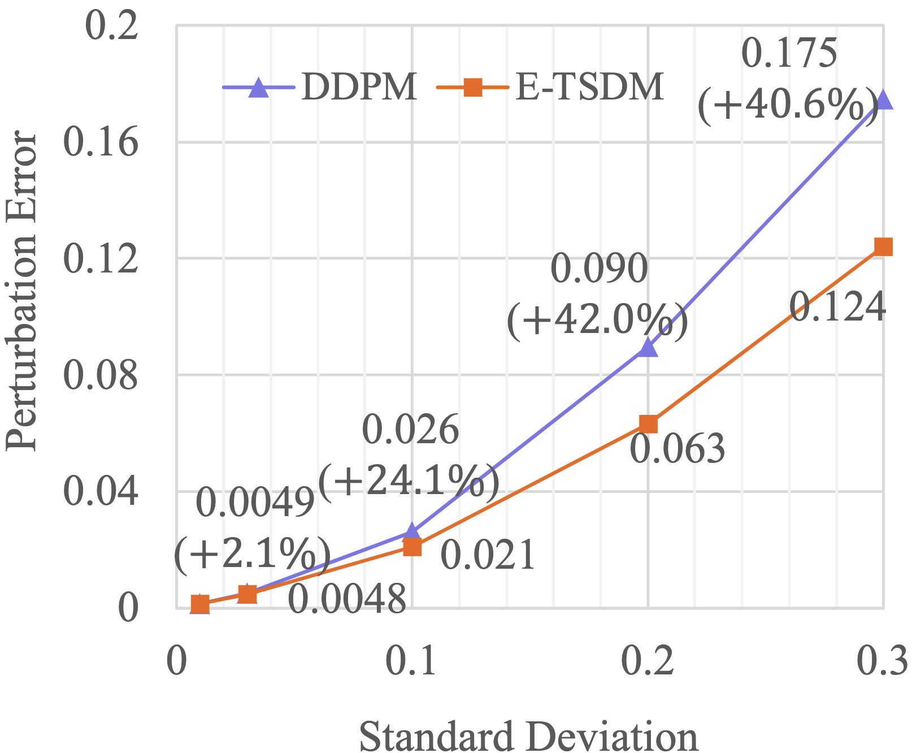
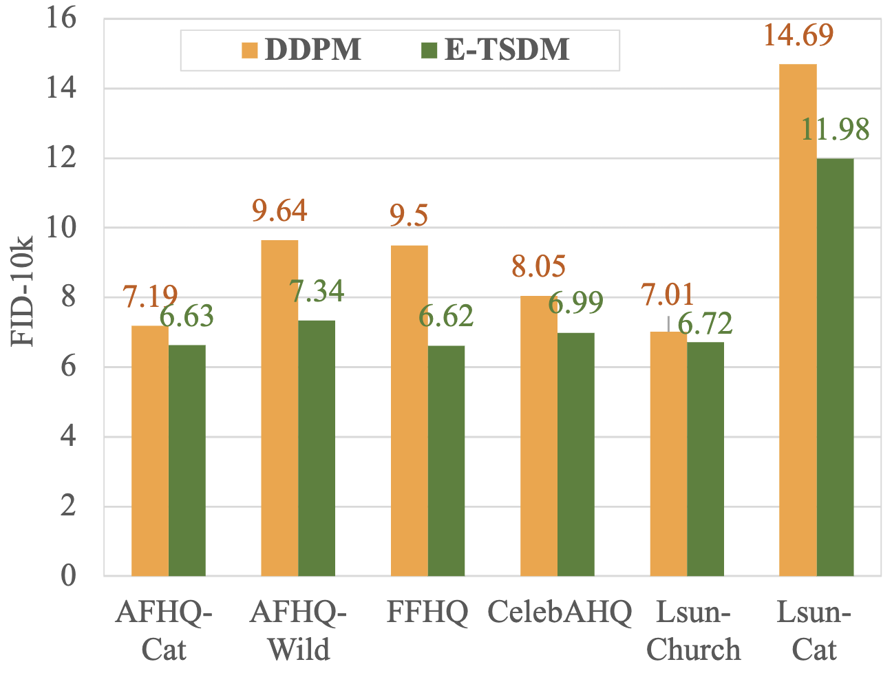
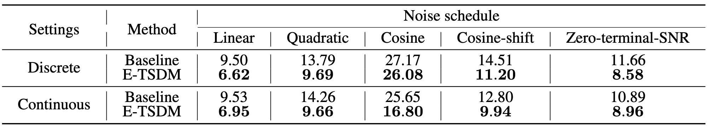
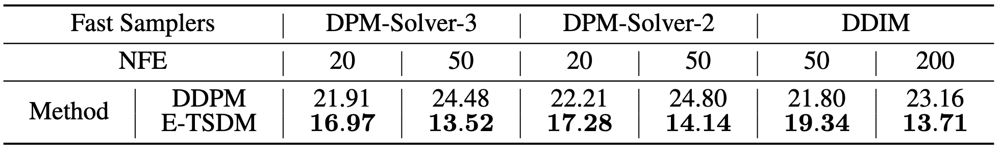
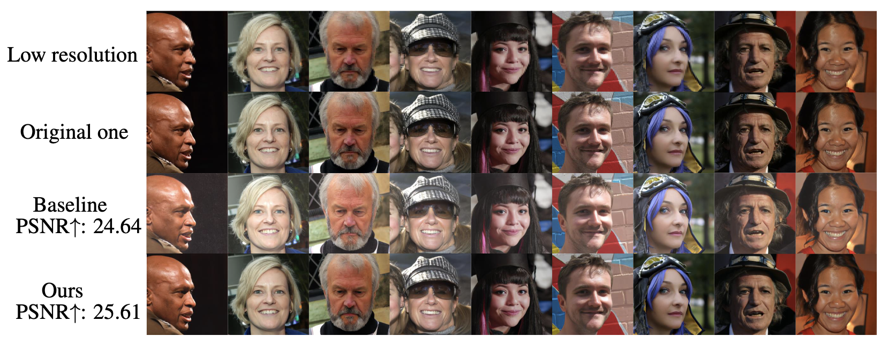
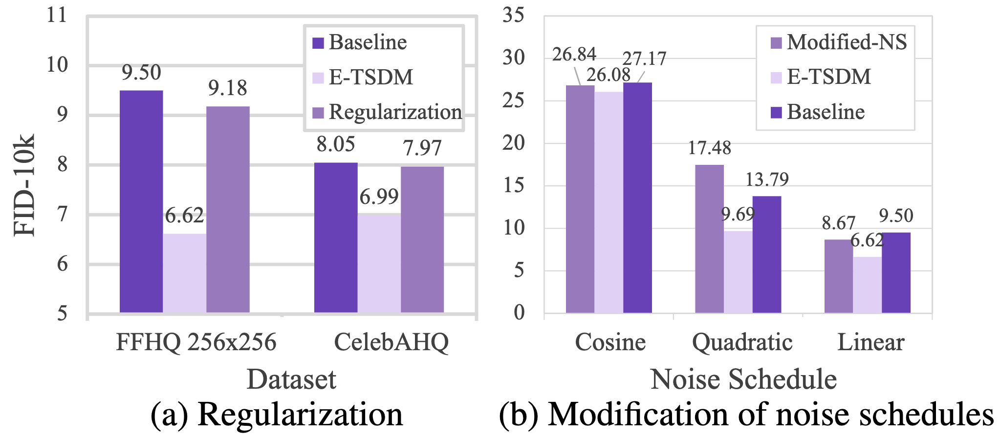

[Updated on 2024-07-22]: Discuss the Lipschitz singularities in diffusion models.
Diffusion models are a significant type of generative model. They start by defining a forward process that incrementally adds noise to the data distribution; then, they learn a reverse process that gradually samples from random noise to obtain the data distribution. In recent years, a series of image or video generation models based on diffusion models have emerged, such as (Stable Diffusion XL, Dustin Podell et al., 2023), (Dall-E 3, James Betker et al., 2023), (Sora, OpenAI, 2024), and so on. Although diffusion models have achieved astounding accomplishments, they still face some challenges, one of which is the problem of Lipschitz singularities. This blog will focus on discussing the Lipschitz singularities issue in diffusion models.
1. What is Lipschitz singularities issue in diffusion models?#

Figure 1. Lipschitz singularities issue observed in practice.
In practice, we surprisingly observe that the noise-prediction and v-prediction diffusion models often exhibit a perplexing tendency to possess infinite Lipschitz of network with respect to time variable near the zero point. We call it Lipschitz singularies issue.
Since we uniformly sample timesteps for both training and inference processes, large Lipschitz constants w.r.t. time variable pose a significant threat to both training and inference processes of diffusion models. When training, large Lipschitz constants near the zero point affect the training of other parts due to the smooth nature of the network, resulting in instability and inaccuracy. Moreover, since inference requires a smooth network for integration, the large Lipschitz constants probably have a substantial impact on accuracy, particularly for faster samplers. Therefore, the mitigation of Lipschitz singularities holds great potential for enhancing the performance of diffusion models.
Given a noise schedule, since $\sigma_t = \sqrt{1 - \alpha_t^2}$, we have $\dfrac{d \sigma_t}{dt} = -\dfrac{\alpha_t}{\sqrt{1-\alpha_t^2}} \dfrac{d\alpha_t}{dt}$. As $t$ gets close to 0, the noise schedule requires $\alpha_t \rightarrow 1$, leading to $d \sigma_t / dt \rightarrow \infty$ as long as $\dfrac{d\alpha_t}{dt}|_{t=0}\neq 0$. The partial derivative of the network can be written as
Note that $\alpha_t \rightarrow 1$ as $t \rightarrow 0$, thus if $\dfrac{d\alpha_t}{dt}|_{t=0}\neq 0$, and $\nabla_\mathbf{x} \log q_t(\mathbf{x})|_{t=0}\neq \mathbf{0}$, then one of the following two must stand.
Note that $\dfrac{d\alpha_t}{dt}|_{t=0}\neq 0$ stands for a wide range of noise schedules, including linear, cosine, and quadratic schedules. Besides, we can safely assume that $q_t(\mathbf{x})$ is a smooth process. Therefore, we may often have $\lim \sup_{t\rightarrow 0+} \big\lVert \dfrac{\partial \mathbf{\epsilon}_\theta(\mathbf{x}, t)}{\partial t} \big\rVert \rightarrow \infty$, indicating the infinite Lipschitz constants around $t=0$.
Take a simple case that the distribution of data $p(\mathbf{x}_0) \sim \mathcal{N}(\mathbf{0}, \mathbf{I})$ for instance, the score function for any $t\in [0, T]$ can be written as
Due to the relationship $\mathbf{\epsilon}_\theta(\mathbf{x}, t) = - \sigma_t \nabla_\mathbf{x} \log q_t(\mathbf{x})$ and the fact that the deviation $\dfrac{{\rm d} \sigma_t}{{\rm d} t}$ tends toward $\infty$ as $t\rightarrow 0$, we have $\big\lVert \dfrac{\partial \mathbf{\epsilon}_\theta(\mathbf{x}, t)}{\partial t} \big\rVert \rightarrow \infty$.
E-TSDM uniformly divides the target interval near the zero point into $n$ sub-intervals, and uses the same condition values in each sub-interval. The conceptual comparison between E-TSDM and DDPM is shown in Figure 2.

Figure 2. Conceptual comparison between DDPM and E-TSDM.
Specifically, we consider the interval near the zero point suffering from large Lipschitz constants, denoted as $[0, \tilde{t})$, where $\tilde{t}$ indicates the length of the target interval. E-TSDM uniformly divides this interval into $n$ sub-intervals represented as a sequence $\mathbb{T}=\{t_0, t_1, \cdots, t_n\}$, where $0=t_0 < t_1 < \dots < t_n=\tilde{t}$ and $t_1 - t_0 = t_{i} - t_{i-1}, \forall i = 1,2,\cdots,n$. For each sub-interval, E-TSDM employs a single timestep value (the left endpoint of the sub-interval) as the condition, both during training and inference. Utilizing this strategy, E-TSDM effectively enforces zero Lipschitz constants within each sub-interval, with only the timesteps located near the boundaries of the sub-intervals having a Lipschitz constant greater than zero. As a result, the overall Lipschitz constants of the target interval $t\in [0, \tilde{t})$ are significantly reduced. The corresponding training loss can be written as
where $f_{\mathbb{T}}(t)=\max_{1\le i \le n}\{t_{i-1}\in\mathbb{T}: t_{i-1} \le t\}$ for $t < \tilde{t}$, while $f_{\mathbb{T}}(t)=t$ for $t \ge \tilde{t}$. The corresponding reverse process can be represented as
In this section, we show that the estimation error of E-TSDM can be bounded by an infinitesimal, and thus the impact of E-TSDM on the estimation accuracy is insignificant. The detailed proof is shown here.
Theorem 1.
Given the chosen $f_{\mathbb{T}}(t)$, when $t\in[0, \tilde{t})$, the difference between the optimal $\mathbf{\epsilon}_\theta(\mathbf{x}, f_{\mathbb{T}}(t))$ denoted as $\mathbf{\epsilon}^*(\mathbf{x}, f_{\mathbb{T}}(t))$, and $\mathbf{\epsilon}(\mathbf{x}, t) = - \sigma_t \nabla_\mathbf{x} \log q_t(\mathbf{x})$, can be bounded by
and $\Delta {\sigma_{\max}} = \max_{1\leq i\leq n}|\sigma_{t_i} - \sigma_{t_{i-1}}|$. Note that $K(\mathbf{x})$ and $B(\mathbf{x})$ are finite and $\lim_{\Delta t \rightarrow 0} \Delta \sigma_{\max} = 0$ for any continuous $\sigma_t$ where $\Delta t := \tilde{t} / n$, thus the difference converges to 0 as $\Delta t \rightarrow 0$. Furthermore, the rate of convergence is at least $\frac{1}{2}$-order with respect to $\Delta t$.
The $\frac{1}{2}$-order convergence rate is relatively fast in optimization. Given this bound, we think the introduced errors of E-TSDM are controllable.
1$)$ E-TSDM can significantly reduce the Lipschitz constants, where the results are shown in Figure 3.
Figure 3. The Lipschitz constants are significantly reduced by applying E-TSDM.
2$)$ E-TSDM exhibits better stability than the baseline. Specifically, we add a small noise with a growing scale to the $\mathbf{x}_{\tilde{t}}$, where $\tilde{t}$ is set to a default value of 100, and observe the resulting difference in the predicted value of $\mathbf{x}_0$, for both E-TSDM and baseline. Our results, as shown in Figure 4, illustrate that E-TSDM's predictions are less affected by perturbations.

Figure 4. Quantitative comparison of the errors caused by a perturbation on the input between E-TSDM and DDPM. Results show that E-TSDM is more stable.
3$)$ E-TSDM performs much better than the baseline on multiple datasets, where the results are shown in Figure 5.

Figure 5. E-TSDM outperforms the baseline on all evaluated datasets.
4$)$ E-TSDM works on both both discrete-time and continuous-time scenarios, with different noise schedules, where the results are shown in Figure 6.

Figure 6. E-TSDM can be generalized to other noise schedules and is still effective in the context of continuous-time diffusion models.
5$)$ E-TSDM can be combined with fast samplers, where the results are shown in Figure 7.

Figure 7. E-TSDM perfroms better when combined with fast samples than the baseline.
6$)$ E-TSDM can be applied on the conditional generation. We investigate its performance in the super-resolution task, where the results are shown in Figure 8. E-TSDM outperforms the baseline on the test set, achieving an improvement in PSNR from 24.64 to 25.61, and mitigating the color bias exhibited by the baseline.

Figure 8. E-TSDM mitigates the color bias occurring in baseline and improves the PSNR from 24.64 to 25.6.
An alternative potential approach is imposing restrictions on the Lipschitz constants via regularization techniques, called Regularization. It necessitates the computation of $\frac{\partial \mathbf{\epsilon}_\theta(\mathbf{x}, t)}{\partial t}$, consequently diminishing training efficiency.
Although Regularization performs slightly better than baseline, but much worse than E-TSDM, indicating that E-TSDM is a better choice than regularization., where the results are shown in Figure 9

Figure 9. Quantitative analysis of alternative methods. (a) Regularization: Experimental results show that Regularization can slightly improve the FID of DDPM baseline but performs worse than E-TSDM (b) Modification of noise schedules (Modified-NS): We implement Modified-NS on linear, quadratic, and cosine schedules. Experimental results on FFHQ $256\times256$ dataset indicate that the performance of Modified-NS is unstable while E-TSDM achieves better synthesis performance.
another potential method involves the modification of noise schedules. Recall that the issue of Lipschitz singularities only arises when the noise schedule satisfies $\frac{d\alpha_t}{dt}|_{t=0} \neq 0$. Therefore, it becomes feasible to adjust the noise schedule to meet the requirement $\frac{d\alpha_t}{dt}|_{t=0} = 0$, thus mitigating the problem of Lipschitz singularities. Although this modification seems feasible, it results in tiny amounts of noise at the beginning stages of the diffusion process, leading to inaccurate predictions. As shown in Figure 9, the performance of Modified-NS is unstable while E-TSDM achieves better synthesis performance.
4.1 $\rm d \alpha_t / \rm d t$ for widely used noise schedules at zero point#
We have already shown that for an arbitrary complex distribution, given a noise schedule, if $\left. \frac{\rm d\alpha_t}{\rm d t} \right\vert_{t=0} \neq 0$, then we often have $\lim \sup_{t\rightarrow 0+} \big\lVert \frac{\partial \mathbf{\epsilon}_\theta(\mathbf{x}, t)}{\partial t} \big\rVert \rightarrow \infty$, indicating the infinite Lipschitz constants around $t=0$. In this section, we prove that $\left. \frac{\rm d\alpha_t}{\rm d t}\right\vert_{t=0} \neq 0$ stands for three mainstream noise schedules including linear schedule, quadratic schedule and cosine schedule.
4.1.1 $\rm d \alpha_t / \rm d t$ for linear and quadratic schedules at zero point#
Linear and quadratic schedules are first proposed by DDPM. Both of them determine $\{\alpha_t\}_{t=1}^T$ by a pre-designed positive sequence $\{\beta_t\}_{t=1}^T$ and the relationship $\alpha_t := \prod_{i=1}^t \sqrt{1 - \beta_i}$. Note that $t\in \{1,2,\cdots, T\}$ is a discrete index, and $\{\alpha_t\}_{t=1}^T$, $\{\beta_t\}_{t=1}^T$ are discrete parameter sequences in DDPM. However, $\alpha_t$ in $\rm d \alpha_t / \rm d t$ refers to the continuous-time parameter determined by the following score SDE (SDE, Yang Song et al., 2021)
$$
\rm d \mathbf{x}(\tau) = - \frac{1}{2}\beta(\tau) \mathbf{x}(\tau) \rm d \tau + \sqrt{\beta(\tau)} \rm d \mathbf{w},~\tau \in [0, 1],
\tag{9}
$$
where $\mathbf{w}$ is the standard Wiener process, $\beta(\tau)$ is the continuous version of $\{\beta_t\}_{t=1}^T$ with a continuous time variable $\tau \in [0,1]$ for indexing, and the continuous-time $\alpha_t = \exp{(-\frac{1}{2}\int_{0}^t \beta(s) \rm d s)}$. To avoid ambiguity, let $\alpha(\tau),~\tau\in[0,1]$ denote the continuous version of $\{\alpha_t\}_{t=1}^T$. Thus,
$$
\left. \frac{\rm d \alpha(\tau)}{\rm d \tau}\right\vert_{\tau=0} = \left. -\frac{1}{2} \beta(\tau) \exp{(-\frac{1}{2}\int_{0}^\tau \beta(s) \rm d s)} \right\vert_{\tau=0} = -\frac{1}{2} \beta(0).
\tag{10}
$$
Once the continuous function $\beta(\tau)$ is determined for a specific noise schedule, we can obtain $\left. \frac{\rm d \alpha(\tau)}{\rm d \tau}\right\vert_{\tau=0}$ immediately by Equation (10).
where $\bar{\beta}_{\rm min}$ and $\bar{\beta}_{\rm max}$ are user-defined hyperparameters. Then, we define an auxiliary sequence $\{\bar{\beta}_t=T\beta_t\}_{t=1}^T$. In the limit of $T\rightarrow \infty$, $\{\bar{\beta}_t\}_{t=1}^T$ becomes the function $\beta(\tau)$ indexed by $\tau \in [0, 1]$
Thus, $\beta(0) = \bar{\beta}_{\rm min}$ for both linear and quadratic schedules, which leads to $\left. \frac{\rm d \alpha(\tau)}{\rm d \tau}\right\vert_{\tau=0} = -\frac{1}{2}\bar{\beta}_{\rm min}$. As a common setting, $\bar{\beta}_{\rm min}$ is a positive real number, thus $\left. \frac{\rm d \alpha(\tau)}{\rm d \tau}\right\vert_{\tau=0} < 0$.
4.1.2 $\rm d \alpha_t / \rm d t$ for the cosine schedule at zero point#
The cosine schedule is designed to prevent abrupt changes in noise level near $t=0$ and $t=T$ (Improved DDPM, 2021). Different from linear and quadratic schedules that define $\{\alpha_t\}_{t=1}^T$ by a pre-designed sequence $\{\beta_t\}_{t=1}^T$, the cosine schedule directly defines $\{\alpha_t\}_{t=1}^T$ as
With Equation (14), we can easily get $\left. \frac{\rm d \alpha(\tau)}{\rm d \tau}\right\vert_{\tau=0}$
$$
\left. \frac{\rm d \alpha(\tau)}{\rm d \tau}\right\vert_{\tau=0} = -\frac{\pi}{2(1+s)} \tan{\left(\frac{s}{1 + s} \cdot \frac{\pi}{2} \right)},
\tag{15}
$$
which leads to $\left. \frac{\rm d \alpha(\tau)}{\rm d \tau}\right\vert_{\tau=0} < 0$ since $s > 0$.
4.2 Lipschitz singularies for v-prediction diffusion models#
In Section 2, we prove that noise-prediction diffusion models suffer from Lipschitz singularities issue. In this section, we show that the Lipschitz singularities issue is also an important problem for v-prediction diffusion models from both theoretical and empirical perspectives.
Theoretically, the optimal solution of v-prediction models is
where $\mathbf{x} + \nabla_\mathbf{x} \log q_t(\mathbf{x})$ is smooth under the assumption of Section 2, and $\frac{\rm d}{\rm d t}\left(\frac{\sigma_t}{\alpha_t}\right) \rightarrow \frac{\rm d \sigma_t}{\rm d t}$ as $t \rightarrow 0$. Thus, with the same derivation of Section 2, we can conclude that $\lim \sup_{t\rightarrow 0^+} \left\|\frac{\partial v(x, t)}{\partial t}\right\|\rightarrow \infty$. The detailed derivation goes as follows:
Firstly, we can obtain the partial derivative of the v-prediction model over $t$ as
$$
\frac{\partial v(\mathbf{x}, t)}{\partial t} = -\frac{\rm d }{\rm d t}(\frac{\sigma_t}{\alpha_t}) (\mathbf{x} + \nabla_\mathbf{x} \log q_t(\mathbf{x})) - \frac{\sigma_t}{\alpha_t} \frac{\rm d }{\rm d t} (\mathbf{x} + \nabla_\mathbf{x} \log q_t(\mathbf{x})).
\tag{17}
$$
Note that $\frac{d}{dt}\left(\frac{\sigma_t}{\alpha_t}\right) = \frac{1}{\alpha_t^2} \left( \alpha_t \frac{\rm d \sigma_t}{\rm d t} - \sigma_t \frac{\rm d \alpha_t}{\rm d t}\right) \rightarrow \frac{\rm d \sigma_t}{\rm d t} = -\frac{\alpha_t}{\sqrt{1 - \alpha_t^2}}\frac{\rm d \alpha_t}{\rm d t}$ as $t \rightarrow 0$ under common settings that $\sigma_0=0$, $\alpha_0=1$, and $\left.\frac{\rm d \alpha_t}{\rm d t}\right|_{t = 0}$ is finite, thus if $\left.\frac{\rm d \alpha_t}{\rm d t}\right|_{t = 0} \neq 0$, and $\mathbf{x} + \nabla_\mathbf{x} \log q_t(\mathbf{x}) \neq \mathbf{0}$, then one of the following two must stand
Under the assumption that $q_t(\mathbf{x})$ is a smooth process, we can conclude that $\lim \sup_{t \rightarrow 0^+} \left\Vert \frac{\partial v(\mathbf{x}, t)}{\partial t} \right\Vert \rightarrow \infty$.
Here we will first give the derivation of the upper-bound on $\Vert \mathbf{\epsilon}^*(\mathbf{x}, f_{\mathbb{T}}(t)) - \mathbf{\epsilon}(\mathbf{x}, t)\Vert$ when $t \in [0, \tilde{t})$, where $\mathbf{\epsilon}^*(\mathbf{x}, f_{\mathbb{T}}(t))$ denotes the optimal $\mathbf{\epsilon}_\theta(\mathbf{x}, f_{\mathbb{T}}(t))$, and $\mathbf{\epsilon}(\mathbf{x}, t)=-\sigma_t \nabla_\mathbf{x} \log q_t(\mathbf{x})$. Then, we will discuss the convergence rate of the error bound.
For any $t \in [0, \tilde{t})$, there exists an $i \in \{1, 2, \cdots, n\}$ such that $t \in [t_{i-1}, t_i)$. For simplicity, we use $h(\mathbf{x}, t)$ to denote the score function $\nabla_\mathbf{x} \log q_t(\mathbf{x})$, and use $\mathbb{E}_\tau[\cdot]$ to denote the expectation over $\tau \sim \mathcal{U}(t_{i-1}, t_i)$. Thus, we can obtain
As for the rate of convergence, it is obvious from \cref{eq:error-bound-derivation} that we only need to determine the convergence rate of $\Delta \sigma_{\max}$. Under common settings, $\sigma_t$ is monotonically decreasing and concave for $t \in [0, T]$, thus
where the last equality holds because $\sigma_{t_0} = \sigma_{0} = 0$, and $t_1 = \tilde{t} / n = \Delta t$ as we uniformly divides $[0, \tilde{t})$ into $n$ sub-intervals. Then, we can verify the convergence rate of $\Delta \sigma_{\max}$ as
$$
\begin{aligned}
\lim_{\Delta t \rightarrow 0} \frac{\Delta \sigma_{\max}}{\sqrt{\Delta t}} &= \lim_{\Delta t \rightarrow 0} \sqrt{\frac{\sigma_{\Delta t}^2}{\Delta t}}\\
&= \left. \sqrt{\frac{\rm d \sigma_t^2}{\rm d t} }\right|_{t = 0} \\
&= \left. \sqrt{\frac{\rm d (1 - \alpha_t^2)}{\rm d t} }\right|_{t = 0} \\
&= \left. \sqrt{-2 \alpha_t \frac{\rm d \alpha_t}{\rm d t}}\right|_{t = 0} \\
&= \left. \sqrt{-2 \frac{\rm d \alpha_t}{\rm d t}}\right|_{t = 0},
\end{aligned}
\tag{23}
$$
where $\left.\frac{\rm d \alpha_t}{\rm d t}\right|_{t = 0}$ is finite and $\left.\frac{\rm d \alpha_t}{\rm d t}\right|_{t = 0} \leq 0$. Thus, we can conclude that $\Delta \sigma_{\max}$ is at least $\frac{1}{2}$-order convergence with respect to $\Delta t$, and the error bound $\sigma_{\tilde{t}} K(\mathbf{x}) \Delta t + B(\mathbf{x}) \Delta \sigma_{\max}$ is also at least $\frac{1}{2}$-order convergence. This is a relatively fast convergence speed in optimization, and demonstrates that the introduced errors of E-TSDM are controllable.